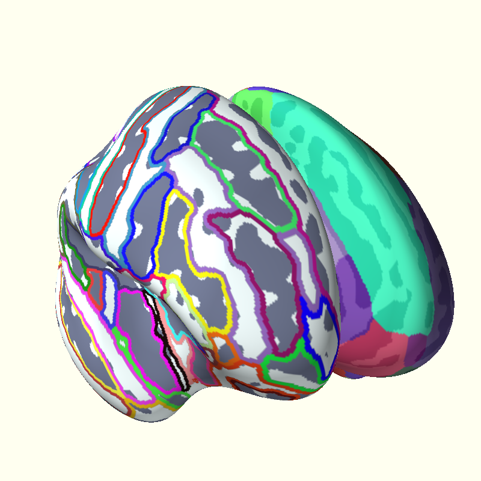

Note
Click here to download the full example code
Using Annotation Files¶
Display a Freesurfer cortical parcellation from an annotation file.
import os
from os.path import join as pjoin
from surfer import Brain
print(__doc__)
subject_id = 'fsaverage'
hemi = 'both'
surf = 'inflated'
view = 'frontal'
"""
Bring up the visualization
"""
brain = Brain(subject_id, hemi, surf, views=view,
cortex="bone", background="ivory")
"""
Display the 'aparc' parcellation borders.
To use annotations that live in your subject's
label directory, just use the annot name.
"""
brain.add_annotation("aparc")
"""
You can also display the regions with "filled in" colors
"""
brain.add_annotation("aparc", borders=False)
"""
You may also provide a full path to an annotation file
at an arbitray location on the disc. You can also
plot things separately for the left and right hemispheres.
"""
subjects_dir = os.environ["SUBJECTS_DIR"]
annot_path = pjoin(subjects_dir, subject_id, "label", "lh.aparc.annot")
brain.add_annotation(annot_path, hemi='lh', borders=False, alpha=.75)
annot_path = pjoin(subjects_dir, subject_id, "label", "rh.aparc.a2009s.annot")
brain.add_annotation(annot_path, hemi='rh', borders=2, remove_existing=False)
Total running time of the script: ( 0 minutes 1.296 seconds)